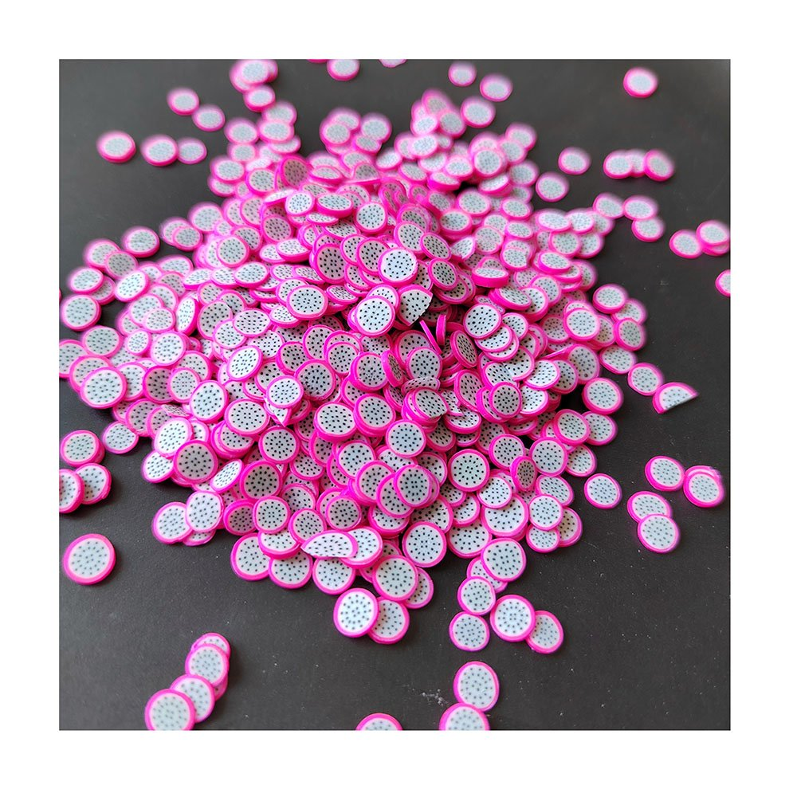
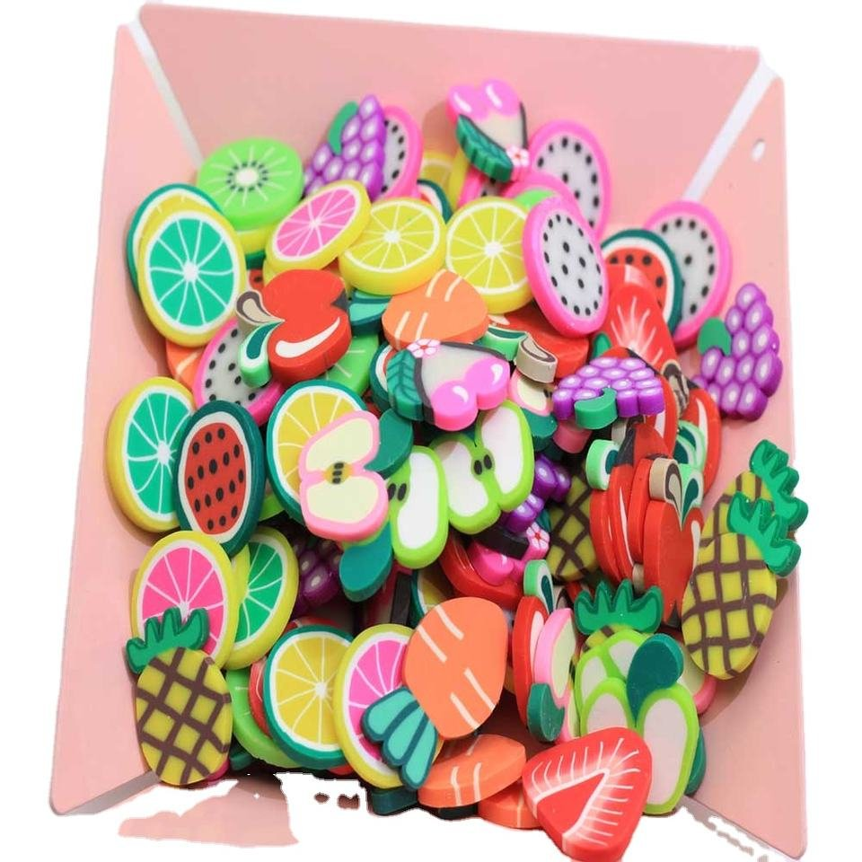

YX053 · Dragon-fruit clay slices
- Listed material
- Polymer Clay
- Listed size
- 5 mm
- Pack reference
- 500 g/bag
Compare a measured sample with the usable area of your jar lid or craft layout.
View product and request a quote →Updated November 9, 2026 · by the Qula Craft sales team

All three are decorative, non-edible components. Appearance and listed size do not establish formula compatibility or a fixed dose.
Compare a measured sample with the usable area of your jar lid or craft layout.
View product and request a quote →
The size is a listed reference; confirm the selected design and assortment.
View product and request a quote →
The hand is a scale reference in the source photograph; use the listed measurements for planning.
View product and request a quote →Pack references describe the listed unit, not a minimum order or a counted yield. Confirm current MOQ, samples, assortment and dispatch date in your quotation.
Fake sprinkles are decorative, non-edible components. In a slime design, small slices can repeat a motif across the surface, while a larger decoration can act as a focal piece. The words “slice” and “charm” do not establish a universal size, material, price unit or performance in a slime formula.
Start with the appearance you want in the jar photograph, then check the selected components in the actual base. A decoration that looks suitable in a dry layout may behave differently when mixed, stored or handled. Keep the intended use and sample observations with the product reference.
| Product | Listed material and size | Pack reference | Planning question |
|---|---|---|---|
| YX053 dragon-fruit slices | Polymer Clay; 5 mm | 500 g/bag | How much coverage does your measured sample give? |
| YX124 fruit slices | Polymer Clay; approximately 20 × 20 × 2 mm | 500 g/bag | Does the selected fruit fit your lid or layout? |
| RW26460 mini fruit decorations | Resin; 14 × 13 × 9 mm reference | 100 pieces/bag; confirm packing | Is the selected shape and thickness suitable for the design? |
The two clay references differ substantially in listed size. Do not choose by material alone. For RW26460, confirm the dimensions of each selected fruit design; an assortment photograph does not establish that every piece has the same dimensions.
A 500 g bag and a 100-piece bag are different ordering units. Weight does not establish a fixed piece count. If your retail kit needs a counted quantity, count and weigh a representative approved sample before estimating how much to order.
For a weight-based packet, a hypothetical 500 g bag divided into 10 g portions gives 50 portions before handling loss. That is a packing calculation, not a slime dose, a ready-made retail pack or a guaranteed yield. For a counted focal decoration, calculate the required pieces from the actual design and confirm the applicable pack and minimum order.
Use the bulk clay sprinkle guide for pack comparisons. Request the current quotation for the exact SKU, selection and quantity rather than assuming clay is always cheaper or that resin is always sold per piece.
A dry product photograph, a material name or a short soak does not establish compatibility with every formula. Share unexpected changes with the supplier before scaling the order. Ask about documents for the selected item and destination; a general guide cannot establish the compliance of a finished slime product.
If you want inclusions mixed through the base, review the bingsu and fishbowl-style filler guide. Keep each component on a separate line in your quotation request so material, unit and sample requirements remain clear.
Jar blanks, finished slime, labels and other styling props are included only when the quotation names them. Confirm whether the selected decoration assortment is random or selectable. Plan your own label and packaging requirements for the intended market and finished product.
Include the SKU or product link, desired color or mix, quantity with units, intended use, sample requirements and delivery destination. If you are designing a kit, specify whether you need separate packets or a proposed combination. Confirm the minimum order, sample charges, packing and dispatch date before finalizing your plan.
No. The references in this guide are decorative, non-edible craft components. Assess the requirements of the intended finished product and market.
Determine the amount through a measured trial with your actual base, jar and selected components. This guide does not prescribe a universal dose.
Weight alone does not establish piece count. Count and weigh a representative approved sample if your kit needs a counted quantity.
An early check does not establish long-term performance. Test the selected sample in the actual formula and intended storage conditions over the period relevant to your product.
Sizes, gram math, stock vs custom MOQ, quality checks and packaging
Read guide →Review non-food labeling, small-parts warnings and documentation questions for your intended sales market.
Read guide →The filler side of the jar — what each texture does and how to test for colour bleed.
Read guide →